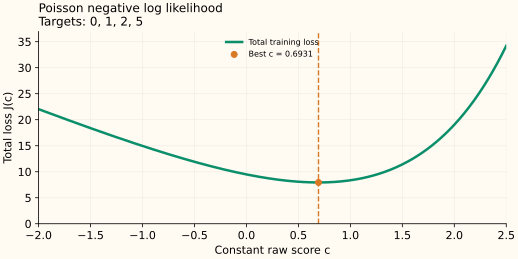

Poisson Loss: Why the Best Constant Is a Log Mean
Poisson loss models a nonnegative integer count using a positive mean. The best constant mean count is the average count, while the score stored by a log-link model is the logarithm of that average.
From count probability to loss
For $y\in\{0,1,2,\ldots\}$ and mean $\mu>0$, the Poisson probability is $P(Y=y\mid\mu)=e^{-\mu}\mu^y/y!$. Its negative logarithm is
A model can keep its predicted mean positive by setting $\mu=e^F$. Substituting this into the loss gives
The observed $y$ is fixed during optimization, so the factorial term has no score derivative. The derivative is $e^F-y=\mu-y$ and the correction target is $y-\mu$. The tree’s final update is added to the log-mean score, not directly to the count.
Minimize the loss of a constant score
First assume every row has the same exposure: the same observation duration, area, or other opportunity for events. A constant score $c$ gives every row mean $e^c$. Sum the losses:
When the total count is positive, set the slope to zero:
Since $J''(c)=ne^c>0$, this stationary point is the unique global minimum. The result matches the mean of the counts; it is not the mean of their logarithms.
Keep the score and count separate
For counts $[0,1,2,5]$, the mean is $8/4=2$. The starting score is therefore $\log 2\approx0.693$, and the reported count is $e^{0.693}\approx2$. The residual-like correction targets are $[-2,-1,0,3]$, whose sum is zero at this constant optimum.


All-zero counts give a boundary solution
If every count is zero, $J(c)=ne^c$. Lowering $c$ always lowers the loss; its infimum is zero as $c\to-\infty$. There is no finite best score. The limiting mean $\mu=0$ is a valid degenerate Poisson distribution concentrated at zero. A positive lower bound on the mean changes the optimum to that bound.
Unequal exposure changes which average is correct
Let $a_i>0$ denote each row’s known exposure and let $e^c$ be a shared event rate. Then $\mu_i=a_i e^c$. The fixed term $\log a_i$ is an offset in the log mean. Terms depending on $c$ give
The fitted rate is total events divided by total exposure. Each reported mean count is that rate times its own exposure. With observation weights, replace both sums by weighted sums. For equal exposure 1, the result reduces to the ordinary mean count.
A Poisson likelihood assumes a specific count distribution. Its mean estimate can still be useful when the data are overdispersed, but that does not validate Poisson uncertainty intervals.
Sources and reproducible figures
The examples and plots are computed by this reproduction script, which also checks the stated minima. Inspect the figure data.